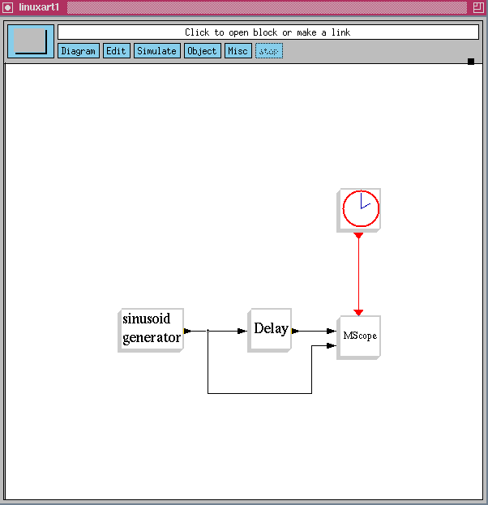
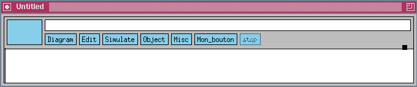
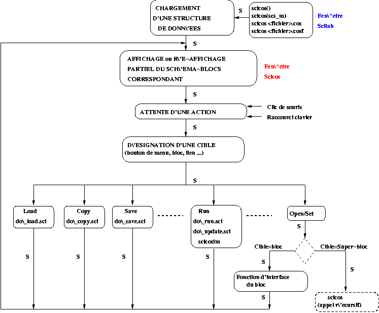
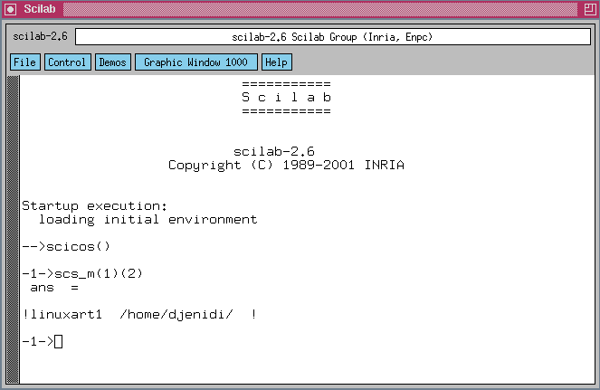

Tous ces articles en ligne sur Scilab ont été écrits pour
LINUX MAGAZINE FRANCE par les
développeurs du Scilab Group. Les articles sont sous
licence FDL (Free Documentation
Licence)
L'éditeur graphique de Scicos
Dans les articles parus dans les numéros 18 et 19 nous avions
montré Scicos d'un point de vue utilisateur. Dans
ce numéro nous proposons un premier article d'une série de trois,
d'un point de vue développeur. Nous
présentons ici le fonctionnement interne de l'éditeur graphique
de Scicos. Dans les articles suivants nous parlerons des étapes de
compilation, de simulation et de génération automatique de
code.
Introduction
Scicos (Scilab Connected Object Simulator) est une boite à
outils du logiciel libre de calcul matriciel Scilab (cf.
http://www-rocq.inria.fr/scilab
et Introduction à Scilab : livre paru en Oct. 2001 dans la
collection IRIS - Springer). Scicos permet de modéliser et de
simuler des systèmes dynamiques hybrides (continus - discrets). Scicos
contient un éditeur graphique de type schéma-blocs (cf.
figure ??), qui offre la possibilité de
construire de tels systèmes par de simples clics de souris sur des
boutons (ou des raccourcis-clavier), déroulants différents menus.
L'utilisateur peut ainsi réaliser différentes actions sur les
blocs (telles que le déplacement, la suppression, la copie, la
modification de paramètres, l'ajout de liens etc...).

Figure 1: Un schéma-blocs simple
Les fonctions qui exécutent les menus (par exemple
: do_copy pour dupliquer un bloc, do_delete pour le supprimer
ou encore do_move pour le déplacer) sont situées dans le
répertoire <SCI>/macros/scicos. La variable SCI
indique l'endroit où Scilab est installé. Ces fonctions sont
gerées par la fonction scicos, contenue dans le fichier
<SCI>/macros/auto/scicos.sci. L'extension .sci indique que
scicos est écrite en langage Scilab. Les articles
précédents ont permis de montrer l'utilisation de Scicos, ici
nous montrons au lecteur qu'il est possible de modifier et adapter l'interface
graphique. Pour cela nous devons comprendre comment sont gerées les
fonctionnalités qui utilisent des variables et des fonctions Scilab.
C'est ce que nous proposons, à travers un exemple de création
d'une fonction de menu.
1 Affichage de la fenêtre Scicos
La fonction scicos lance l'affichage d'une fenêtre Scicos, en
tapant la commande suivante : --> scicos()
Une fenêtre vide est chargée, appelée par défaut
Untitled. Il est aussi possible de lancer directement l'affichage
d'un schéma-blocs pré-enregistré dans un fichier. On
mettra comme argument le nom de ce fichier avec l'extension .cos
(exemple linuxart1.cos), ce qui signifie qu'il a été
enregistré sous un format binaire. Ce format est celui d'enregistrement
par défaut dans Scicos.
-->
scicos <chemin>/linuxart1.cos
Notons qu'il existe aussi la possibilité de faire des enregistrements
dans le format ASCII (avec l'extension .cosf). Les sauvegardes dans
ce format s'effectuent plus lentement que dans le format binaire et sont plus
volumineuses.
2 Bouton de menu
Pour pouvoir afficher la barre de menus dans la fenêtre Scicos, la
fonction scicos utilise la variable Scilab %scicos_menu qui
est (par défaut) une liste de 6 listes de chaînes de
caractères, correspondant aux 6 boutons de la barre de menus.
%scicos_menu ainsi que les variables scicos_pal et
%scicos_short sont initialisées (au démarrage de Scilab)
dans le fichier principal d'initialisation Scilab.star, par un appel
à la fonction initial_scicos_tables. Nous verrons par la suite
comment modifier les variables %scicos_menu et %scicos_short
. scicos_pal contient le nom des palettes de blocs existantes. Le
premier élément de chacune des listes contenues dans
%scicos_menu, indique le nom du bouton de menu. En cliquant sur chacun de
ces boutons, on déroule les différents menus qui réalisent
les fonctionalités de l'éditeur graphique de Scicos. Notons que
le bouton STOP est un menu spécifique à la phase de
simulation, il n'apparait donc pas dans le contenu de la variable
%scicos_menu. L'utilisateur peut aussi ajouter de nouveaux boutons
dans la barre principale de menus. Il suffit pour cela de modifier la variable
Scilab %scicos_menu. Par exemple, nous allons ajouter un nouveau
bouton Mon_bouton qui donne accès à une nouvelle
fonction Ma_fonction. Nous ajoutons un nouvel élément
à %scicos_menu en écrivant dans la fenêtre Scilab
: --> %scicos_menu($+1)=["Mon_bouton",
"Ma_fonction"]
En tapant par exemple la commande
-->
scicos()
, on peut ainsi observer le résultat obtenu (cf. figure ??).

Figure 2: Ajout d'un nouveau bouton dans le menu Scicos
3 Raccourci clavier
Pour pouvoir exécuter directement certaines fonctions très
employées, il existe la possibilité de taper directement des
touches sur le clavier : ce sont des raccourcis clavier. Pour ce
faire, la fonction scicos utilise la variable Scilab
%scicos_short, qui représente une matrice de chaînes de
caractères contenant la définition des raccourcis
clavier. Ajoutons à notre nouvelle fonction Ma_fonction,
l'option de raccourci clavier en tapant directement la lettre b
sur le clavier pour l'exécuter. -->%scicos_short=[%scicos_short;["b","Ma_fonction"]];
Il reste maintenant à définir les fonctionnalités de
Ma_fonction, mais pour cela nous allons d'abord expliquer le
fonctionnement de l'éditeur graphique ...
4 Le fonctionnement de l'éditeur graphique
Le schéma de la figure ?? résume les
grandes étapes du fonctionnement de la fonction scicos. Deux
notions dont nous parlerons plus en détail dans un prochain
numéro, sont :
- ·la liste %cpr
(qui contient le résultat de compilation du schéma-blocs)
- ·la fonction
scicosim (qui appelle le simulateur Scicos).
scs_m est une structure hiérarchique de données qui
contient la description complète du schéma-blocs
édité.

Figure 3: Le fonctionnement de l'éditeur graphique de Scicos (S :
scs_m et %cpr)
L'attente d'une action (de type clic de souris ou
raccourci clavier) est gerée par la fonction Scilab cosclick,
qui fait appel à la fonction de détection xclick (cf.
numéro 20 de Linux Magazine). xclick est une fonction
compilée dans une bibliothèque Scilab (fortran ou C),
appellée aussi une primitive Scilab (cf. numéro 15 de
Linux Magazine). xclick permet de récuperer soit les
coordonnées de position du pointeur de la souris dans la fenêtre,
soit le nom d'un menu qui vient d'être sélectionné.
cosclick code cette information dans une variable interne (Cmenu
), qui est utilisée pour exécuter la fonction correspondante
au menu, dont le nom est toujours suivi d'un ``_``, comme par exemple,
pour le menu Move (qui permet de déplacer des blocs, des liens
ou du texte) la fonction correspondante est SmartMove_. Bien que
définie comme une fonction, la fonction correspondante à un menu
est en fait exécutée comme un script. De cette manière,
elle peut faire appel à une autre fonction protégant ainsi les
variables utilisées. En l'occurrence, SmartMove_ fait appel
à la fonction do_move. Signalons pour la fonction do_move
, que pour chaque déplacement effectué on ne re-dessine que
l'élément concerné : c'est pourquoi nous avons, dans le
schéma de la figure ??, la notion de
ré-affichage partiel. Par défaut (si aucun menu n'a
été sélectionné au préalable), le fait de
cliquer directement sur un bloc (ou de le pointer avec la souris et taper
ensuite la lettre o sur le clavier), revient à exécuter
le menu Open/Set (lié à la fonction OpenSet_) :
- ·Dans le cas
où un bloc est ciblé, on récupère ses
coordonnées par la fonction xclick, puis avec la fonction
getobj on en détermine le nom du bloc afin d'appeler (avec le
paramètre Job='set') sa fonction d'interface (cf. numéro
19 de Linux Magazine). Des précisions sur Job sont
données par la suite. En général, la fonction d'interface
ouvre une fenêtre de dialogue qui permet de changer éventuellement
des paramètres du bloc.
- ·Dans le cas
où un super-bloc est ciblé, la fonction OpenSet_
rappelle (récursivement) la fonction scicos avec, en
entrée, la structure de données du super-bloc scs_m
(cf. ci-dessous).
Notons que dans certains cas, en sortie de fonctions de menu telles que
Open/Set, Copy ..., scicos gère
automatiquement deux variables :
- needcompile : qui indique si le schéma doit être
re-compilé, en fonction des modifications effectuées.
- edited : qui permet de signaler à l'utilisateur la
nécessité de faire une sauvegarde, si le schéma a
été modifié.
5 scs_m : la structure principale de données
scs_m contient aussi bien des informations graphiques (couleurs,
formes, représentation d'icones ...), topologiques (position et taille
des blocs, hiérarchie des super-blocs, ...), le nom de la fonction de
simulation (cf. numéro 19 de Linux Magazine) que les paramètres
associés à chaque bloc. scs_m est une liste qui contient
elle-même d'autres listes. La syntaxe de scs_m est
scs_m=list(params,o_1,....,o_n), avec params la liste
contenant les informations sur certains paramètres et o_i la
structure de données du ième bloc ou lien. L'indice
i étant donné par l'ordre de création des blocs
et des liens. Prenons l'exemple du schéma-blocs de la figure ??, contenant quatre blocs. Pour obtenir des informations sur
ce schéma, deux possibilités existent :
- soit la sélection dans le menu Misc (Miscellaneous qui se
traduit par Divers) du bouton Calc (Calculateur Scilab), ce qui permet
de consulter directement dans la fenêtre Scilab, les variables et objets
Scilab ainsi que le contenu de la liste scs_m.
- soit l'enregistrement du schéma-blocs dans un fichier ASCII (avec
l'extension .cosf), ce qui permet, en utilisant un éditeur de
texte (emacs ou autre) d'en éditer le contenu (correspondant à la
liste scs_m).
Nous avions vu, au début de cet article, comment lancer l'affichage
d'une fenêtre Scicos, notons que nous pouvons aussi le faire si l'on
possède la structure de données scs_m associée
à un schéma-blocs : --> scicos(scs_m)
6 params : la liste des paramètres
La syntaxe de la liste params est la suivante :
params=list(wpar,title,tol,tf,context,void,options,void,void,doc)). Elle
se compose de plusieurs listes :
- wpar pour les paramètres d'affichage de la fenêtre
Scicos : [w,h,Xshift,Yshift] respectivement la largeur, la longueur,
le positionnement horizontal et vertical.
- title : c'est un vecteur de chaîne de caractères qui
contient à la fois le nom du schéma-blocs ainsi que le chemin du
fichier enregistré.
- tol : c'est le vecteur [atol,rtol,ttol,maxt], qui
contient les valeurs des paramètres de tolérence pour le solveur
ODE (Ordinary Differential Equations).
- tf : c'est le temps final de simulation.
- context : c'est un vecteur de chaîne de caractères
qui contient des instructions Scilab définissant des variables pouvant
être utilisées dans les blocs. Ce sont les paramètres
symboliques.
- void : c'est un champ inutilisé
- options: c'est une liste qui contient le booléen
With3D et le vecteur Color3D. With3D indique si la
représentation des blocs est (ou non) en 3D. Color3D
définit les trois couleurs de base [R,G,B] pour la représentation
en 3D.
- doc : c'est une structure définie par l'utilisateur pour
la documentation du schéma, elle vaut par défaut list().
En prenant le schéma de la figure ?? et en
utilisant la fonction Calc, nous pouvont consulter le contenu de la
structure scs_m, dans la fenêtre Scilab. Par exemple, comme le
montre la figure ??, le premier élément
de scs_m est params qui contient le nom et l'emplacement du
schéma-blocs title.

Figure 4: Le premier élément de scs_m
Lorsque l'on fait une modification dans un
schéma-blocs le contenu de la structure scs_m est
modifié. Ces modifications peuvent concerner non seulement la conception
du schéma-blocs (ajout ou retrait de bloc) mais aussi bien les
paramètres de simulation (bouton Setup dans le menu
Simulate), que les paramètres symboliques (bouton Context
dans le menu Edit).
7 La structure de données d'un bloc
Chaque bloc Scicos est défini par une structure de données Scilab
contenant toutes les informations graphiques et de simulation :
list('Block',graphics,model,unused,GUI_function)
où GUI_function est la fonction d'interface
correspondante, graphics est la la liste Scilab des valeurs graphiques
et model est la liste Scilab relative à la simulation. La
syntaxe d'appel des fonctions d'interface est standard pour tous les blocs :
[x,y,typ]=block(job,arg1), le paramètre job selectionne
l'opération à réaliser. Dans un article paru dans le
numéro 19 de Linux Magazine, une présentation de GUI_function
avait été donnée, nous ne parlerons donc ici que du
paramètre job.
7.1 job : le paramètre de tâche de
GUI_function
- ·job=='plot' : la
fonction dessine le bloc.
- arg1 est la structure de données du bloc.
- x,y,typ sont inutilisés.
En général, nous utilisons la fonction standard_draw qui
dessine un bloc rectangulaire, ainsi que les ports d'entrées et sorties.
Elle gère aussi la taille, l'icône et les couleurs du bloc.
- ·job=='getinputs' :
la fonction retourne la position et le type des ports d'entrées
(régulier ou d'activation).
- arg1 est la structure de données du bloc.
- x est le vecteur de coordonnées x des ports
d'entrées.
- y est le vecteur de coordonnées y des ports
d'entrées.
- typ est le vecteur de type des ports d'entrées (1 pour
régulier et 2 pour activation).
En général, nous utilisons la fonction standard_input.
- ·job=='getoutputs' :
retourne la position et le type des ports de sorties (régulier ou
d'activation).
- arg1 est la structure de données du bloc.
- x est le vecteur de coordonnées x des ports de sorties.
- y est le vecteur de coordonnées y des ports de sorties.
- typ est le vecteur de type des ports de sorties (1 pour
régulier et 2 pour activation).
En général, nous utilisons la fonction standard_output.
- ·job=='getorigin' :
retourne les coordonnées du plus bas point à gauche du rectangle
contenant la silhouette du bloc.
- arg1 est la structure de données du bloc.
- x est la coordonnée x du plus bas point à gauche du
bloc.
- y est le vecteur de coordonnées y du plus bas point
à gauche du bloc.
- typ est inutilisé .
En général, nous utilisons la fonction standard_origin.
- ·job=='set' :
fonction d'ouverture d'un dialogue pour l'acquisition des paramètres du
bloc, s'ils existent. Ce dialogue se crée lorsque l'on ``clique'' sur le
bloc considéré. Le programme doit vérifier la
cohérence des paramètres fournis par l'utilisateur.
- arg1 est la structure de données du bloc.
- x est la nouvelle structure de données du bloc.
- y est inutilisé.
- typ est inutilisé.
- ·job=='define' :
initialisation de la structure de données du bloc (nom de correspondance
avec la fonction de calcul, le type, le nombre et la taille des ports
d'entrées et sorties, etc...).
- arg1 est inutilisé,
- x est la structure de données du bloc.
- y est inutilisé.
- typ est inutilisé.
7.2 graphics : la structure de données des
valeurs graphiques
La syntaxe de graphics s'écrit de la manière suivante :
graphics = list([xo,yo],[l,h],orient,dlg,pin,pout,pcin,pcout,gr_i)
- ·xo :
coordonnée de l'abscisse de l'origine du bloc
- ·yo :
coordonnée de l'ordonnée de l'origine du bloc
- ·l : largeur du bloc
- ·h : hauteur du bloc
- ·orient :
booléen indiquant si le bloc est retourné (flip) : la position
basique est représentée avec les ports d'entrées à
gauche et de sorties à droite.
- ·dlg : vecteur de
chaîne de caractères, contenant les paramètres symboliques
du bloc
- ·pin : vecteur,
pin(i) est le numéro du lien connecté au port
d'entrée régulière numéro (i), il vaut 0
si ce port est non connecté.
- ·pout : vecteur,
pout(i) est le numéro du lien connecté au port de sortie
régulière numéro (i), il vaut 0 si ce port est
non connecté.
- ·pcin : vecteur,
pcin(i) est le numéro du lien connecté au port
d'entrée d'activation numéro (i), il vaut 0 si ce port
est non connecté.
- ·pcout : vecteur,
pcout(i) est le numéro du lien connecté au port de
sortie d'activation numéro (i), il vaut 0 si ce port est non
connecté.
- ·gr_i : vecteur de
chaîne de caractères des instructions Scilab utilisées pour
dessiner l'icône.
7.3 model : la structure de données relatives
à la simulation
La syntaxe de model s'écrit de la manière suivante :
model=list(eqns,#input,#output,#clk_input,#clk_output,..
state,dstate,rpar,ipar,typ,firing,deps,label,unused)
- ·eqns : liste
contenant deux éléments. Le premier est une chaîne de
caractères contenant le nom de la fonction de simulation, le
second élément est un entier spécifiant son type (cf.
numéro 19 de Linux Magazine).
- · #input : vecteur
dont la taille est égale au nombre de ports d'entrées
régulières. Chaque élément du vecteur specifie la
taille du port d'entrée correspondant. Un entier négatif signifie
que sa valeur ``doit être déterminée par le compilateur''.
La même valeur d'entier négatif sur plus d'un port d'entrée
ou de sortie indique que ces ports ont une taille identique.
- · #output : vecteur
dont la taille est égale au nombre de ports de sorties
régulières. Chaque élément du vecteur specifie la
taille du port de sortie correspondant. Un entier négatif signifie que
sa valeur ``doit être déterminée par le compilateur''. La
même valeur d'entier négatif sur plus d'un port d'entrée ou
de sortie indique que ces ports ont une taille identique.
- · #clk_input :
vecteur dont la taille est égale au nombre de ports d'entrées
d'activation. Tous les éléments du vecteur doivent avoir leur
valeur égale à 1. Scicos ne gèrent pas (pour le moment) la
vectorisation des liens d'activation.
- ·#clk_output :
vecteur dont la taille est égale au nombre de ports de sorties
d'activation. Tous les éléments du vecteur doivent avoir leur
valeur égale à 1. Scicos ne gèrent pas (pour le moment) la
vectorisation des liens d'activation.
- ·state : vecteur
(colonne) de l'état continu initial.
- ·dstate : vecteur
(colonne) de l'état discret initial.
- ·rpar : vecteur
(colonne) des paramètres réels utilisés pour la
fonction de simulation.
- ·ipar : vecteur
(colonne) des paramètres entiers utilisés pour la fonction de
simulation.
- ·typ : chaîne
de caractères : 'c' si le type de bloc est continu, 'd' s'il est
discret, 'z' s'il détecte la traversée de zéro, 'I' s'il
est Synchro et 'm' si c'est un bloc Memo.
- ·firing : vecteur des
dates des événements initiaux, de taille le nombre des sorties
d'activation (<0 il n'y a pas d'événement initial
programmé)
- ·deps : [udep
timedep]
- udep : booléen, vrai si le système a une relation directe
entre l'entrée et la sortie, ou au moins une des sorties dépend
explicitement d'une des entrées.
- timedep : booléen, vrai si le bloc est activé en permanence.
- ·label : chaîne
de caractères qui contient un identifiant pour le bloc, défini
avec le menu Label du bouton Object.
8 La structure de données d'un lien
Chaque lien dans Scicos est défini par une structure de données
Scilab contenant les informations suivantes :
lnk=list('Link',xx,yy,'drawlink',id,[0,0],ct,from,to)
où Link est un mot clé pour définir une liste
représentant un lien Scicos. xx est le vecteur des
coordonnées en abscisse du lien. yy est un vecteur des
coordonnées en ordonnées du lien. id est la chaîne
de caractères éventuelle pour ce lien. ct
représente le vecteur [color,typ], avec respectivement la
définition de la couleur du lien et la définition du type de lien
(0 pour un lien régulier, 1 pour un lien d'activation). from
représente le vecteur [block,port], avec respectivement
l'indice du bloc d'origine du lien et le numéro de port du bloc. to
représente le vecteur [block,port], avec respectivement
l'indice du bloc receant le lien et le numéro de port du bloc.
9 La structure de données d'un texte
Un troisième type d'objet existe aussi et concerne la possibilité
d'afficher un texte dans la fenêtre Scicos, de le déplacer, de le
supprimer etc... . Des explications sur ce type d'objet n'ayant que peu
d'interêt, nous signalons néanmoins son existence.
10 Définition de la fonction d'un menu
Dans un schéma-blocs, les paramètres peuvent être
définis de manière globale par des variables dans le menu
context du bouton Edit (par exemple : A=4). Signalons que
l'on peut aussi définir des variables dans la fenêtre Scilab,
avant d'ouvrir une fenêtre Scicos. Dans chaque bloc on peut aussi
définir une expression textuelle (par exemple : 'A'), que l'on appelle
aussi paramètre symbolique, qui est sauvegardée automatiquement
dans le champ dlg de graphics par la fonction do_eval
. Cette fonction évalue les expressions dans dlg et
calcule les valeurs numériques correspondantes stockées dans le
vecteur rpar du bloc (par exemple : 4, si A=4). La fonction
Context_ (liée au menu context) appelle
systématiquement la fonction do_eval, il devient ainsi
aisé de changer en une seule fois (dans context), la valeur
numérique d'un paramètre dont dépendent plusieurs blocs.
Pour notre exemple de menu Ma_fonction du bouton Mon_bouton,
nous proposons de réaliser la fonctionnalité qui permet de
détecter les blocs contenant un paramètre symbolique qu'aura
indiqué l'utilisateur. Nous commençons donc par créer la
fonction Ma_fonction_, qui doit faire appel à la fonction
do_mafonction.
10.1 La fonction Ma_fonction_
function Ma_fonction_()
xinfo('Recherche de blocs contenant un parametre formel')
Cmenu='Open/Set'
disablemenus()
do_mafonction(scs_m)
enablemenus()
Cmenu='Open/Set' permet en sortie de la fonction de garder la
fonctionnalité (dont nous avons déjà parlé) qui
existe par défaut. disablemenus() rend inaccessible la barre de
menu pendant l'exécution de la fonction, enablemenus() annule
l'effet de disablemenus().
10.2 La fonction do_mafonction
function do_mafonction(scs_m)
// Recherche de parametre formel dans scs_m
//!
//scs_m(i)(1)='block'
//scs_m(i)(2)=graphics
//scs_m(i)(2)(4)=dlg
okk=%f; label1='A';
[okk,label1]=getvalue('ENTREZ LE PARAMETRE GLOBAL',..
['Expression :'],..
list('str',1),label1);
if okk==%f then
return
else
for i=2:length(scs_m)
if scs_m(i)(1)=='Block' then
if scs_m(i)(3)(1) ~= 'super' then
if scs_m(i)(3)(1) ~= 'csuper' then
if or(scs_m(i)(2)(4)==label1) then
hilite_obj(scs_m(i)) // on encadre le bloc
evstr(message(['Le bloc encadre contient le parametre ' ..
+ string(label1)]));
hilite_obj(scs_m(i)) // on annule l'encadrement
end
end
end
end
end
end
Notre fonction ouvre d'abord une fenêtre de dialogue (fonction
getvalue) qui invite l'utilisateur à indiquer le paramètre
formel à détecter (par défaut c'est A). Lorsqu'un
bloc (qui contient le paramètre spécifié) est
détecté, son contour est surligné grâce à la
fonction hilite_obj et un message est donné à
l'utilisateur. La fonction hilite_obj est appelée une
deuxième fois pour annuler l'effet de la première : c'est le mode
Xor (cf. numéro 28 de Linux Magazine). Pour ne pas compliquer
notre fonction :
- nous ne rentrons pas directement dans les super-blocs 'super'
pour effectuer la détection. Il est cependant possible d'éditer
le contenu de chaque super-bloc et d'exécuter notre fonction à
l'intérieur du super-bloc.
- nous ne considérons pas les super-blocs compilés
'csuper' (dans lesquels on ne peut pas rentrer), obtenus avec le menu
Save as Interf Func du bouton Diagram. Bien qu'à
priori, il serait dans ce cas nécessaire d'exécuter notre
fonction, nous laissons au lecteur le loisir de la modifier en
conséquence.
Nous verrons plus en détails dans le prochain numéro les
étapes de compilation et de simulation des schéma-blocs hybrides
(continu-discret) dans Scicos.
11 Erratum :
Dans la version de Scilab-2.6, nous signalons deux bogues avec Scicos :
- le bloc intégrateur 1/s, qui n'est défini comme
étant activé en permanence mais hérite de l'activation de
son signal d'entrée. Dans la plupart des cas cela ne pose pas de
problème si ce bloc est souvent en aval d'un bloc activé en
permanence (comme par exemple sin(t)). Dans le cas particulier où son
entrée est reliée par exemple à un bloc
générateur de constante (non activé en permanence), il
existe un problème. Actuellement ce problème est corrigé
dans la version actuelle de développement mais en attendant il est
possible d'effectuer les modifications en remplaçant dans le fichier
<SCI>/macros/scicos/Linear.cosf, à la fin :
list('integr',1,1,[],[],0,[],[],[],'c',[],[%f,%f],' ',list()),' ',..
'INTEGRAL_f')}
par
list('integr',1,1,[],[],0,[],[],[],'c',[],[%f,%t],' ',list()),' ',..
'INTEGRAL_f')
Cela fixe le bloc 1/s dans la palette Linear. Ensuite il suffit de
remplacer tous les blocs 1/s de vos schéma-blocs
antérieurs par ce nouveau bloc.
- La fonction <SCI>/macros/scicos/do_eval qui permet
d'évaluer le context d'un schéma-blocs en tenant compte
de celui des super-blocs qu'il contient à été
corrigée et peut-être téléchargée via CVS.
Rachid Djenidi
Scilab Group
scilab@inria.fr
http://www-rocq.inria.fr/scilab/
This document was translated from LATEX
by HEVEA.